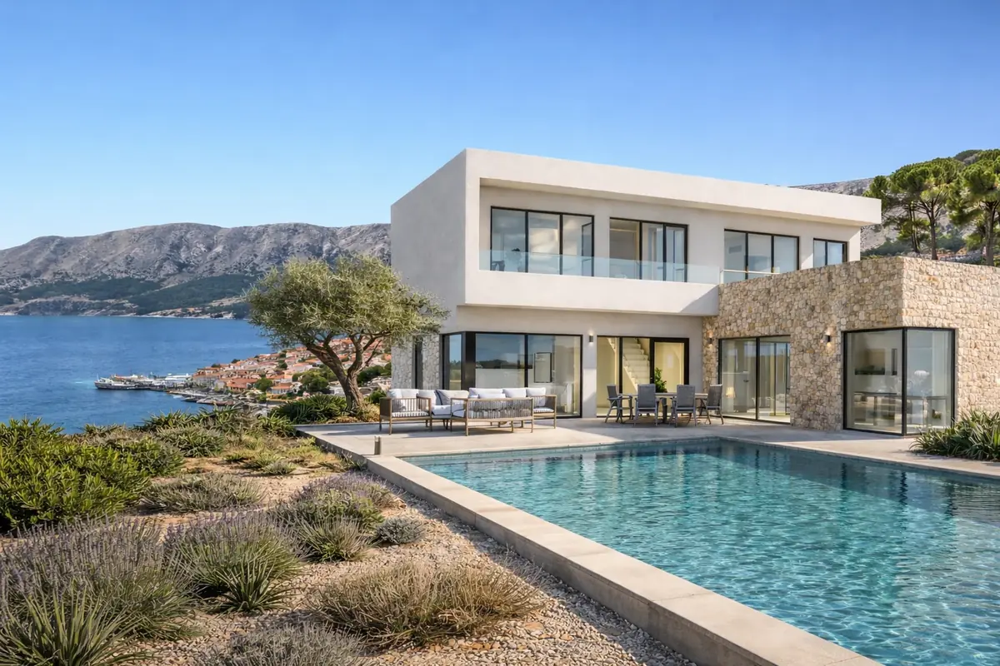

Coastal villa · Baška, Krk, Croatia
Villa Aurora
Real estate development visualization
A clear vision for place and experience.
A refined daylight visualization presenting the villa’s contemporary coastal architecture, outdoor living and relationship to its setting. The image is composed to give prospective clients and stakeholders an immediate sense of place and quality.
LocationBaška, Krk, Croatia
Project typeReal estate development visualization
FocusExterior architectural visualization
Services provided
Built to communicate the development.
Continue exploring
Related project studies.
Available for collaboration